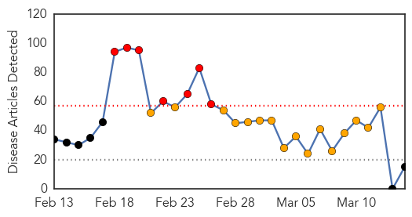
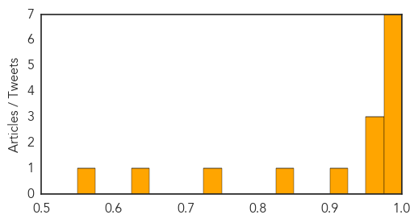
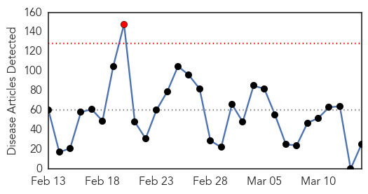
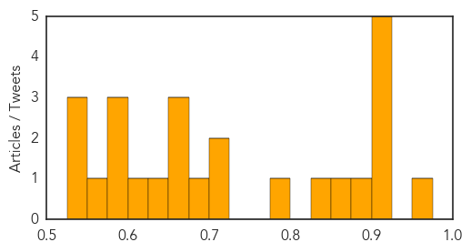

Swine Flu
30-Day Web Trend
7 alerts, 16 warnings

30-Day Twitter Trend
6 alerts, 0 warnings

Article Locations

Article Confidences
Top Articles:
- 1.000
- Swine flu in India: 6 people from Mizoram suspected from Swine flu, samples sent to Kolkata
- 0.997
- Govt to vaccinate 3,000 workers
- 0.996
- Oman bans poultry from North India on Avian Influenza fear, but no travel ban despite surge in H1N1 cases
- 0.989
- Docs advise rest even after swine flu meds
- 0.988
- H1N1 claims 4 lives in Mumbai
- 0.986
- Flu test heat on hospital
- 0.985
- Early summer, high temperature make Madurai safe from H1N1, claim doctors
- 0.974
- Swine flu toll in Rajasthan 371
- 0.972
- Swine flu toll in Rajasthan 371
- 0.951
- Swine flu claims 1stlife in Bihar
- 0.924
- Two more deaths take H1N1 toll to 30 in city
- 0.836
- Central institute out of funds for swine flu tests, Bengal pitches in
- 0.736
- ‘Not notifying TB patients unethical’
- 0.642
- BMC’s helpline gets 761 calls
- 0.556
- Suspected Swine Flu Case In Srikakulam
Top Tweets:
-
No tweets found for Mar 14, 2015
Unknown
30-Day Web Trend
1 alerts, 0 warnings

30-Day Twitter Trend
0 alerts, 0 warnings

Article Locations

Article Confidences
Top Articles:
- 0.968
- Parents urged to be vigilant as scarlet fever cases soar
- 0.917
- Chicago Tribune
- 0.917
- Chicago Tribune
- 0.917
- Chicago Tribune
- 0.917
- Chicago Tribune
- 0.910
- The world windows to Thailand
- 0.886
- Three deaths linked to tainted ice cream in Kansas, prompting recall
- 0.866
- Egypt sacks 41 judges for supporting Brotherhood -sources
- 0.837
- UNE researchers at forefront in the mission to squash superbugs
- 0.795
- Wellington Elementary: The Florida Department of Health Palm Beach says it was a norovirus that made students, teachers and adminisrators at the school sick.
- 0.719
- Health department confirms norovirus at Wellington Elementary School
- 0.702
- Salmonella alert issued in Queensland, warn of cracked, dirty eggs
- 0.697
- State investigating illness at Holman
- 0.669
- Blue Bell Ice Cream Linked To Kansas Listeriosis Outbreak
- 0.663
- iafrica.com Cut your family's risk of HPV
- 0.659
- California hospitals improve infection rates, but one form of bacteria is on the rise
- 0.647
- Impact on Water, Sanitation & Hygiene
- 0.616
- Louisiana germ release likely due to lax use of lab garments
- 0.600
- Medical tourism, another drain on the economy
- 0.589
- Louisiana germ release likely due to lax use of lab garments
- 0.586
- New $1 Vaccine Could Save Hundreds of Thousands of Babies
- 0.564
- Zambia’s president recovering after surgery in South Africa
- 0.547
- Vietnam vet's widow settles federal Legionnaire's lawsuit
- 0.545
- Doctors claim first successful penis transplant
- 0.527
- Focus on prevention to ease kidney disease burden
Top Tweets:
- 0.648
- El contenido de mi nevera está en crisis.
- 0.517
- Flu Virus in China Has Pandemic Potential, Scientists Say http://t.co/TFZ4Vic8KK
- 0.504
- RT: Seguimos cruzando fronteras! El diario "Esto" de México, que se difunde en 53 ciudades, nos presenta como el... http://t…